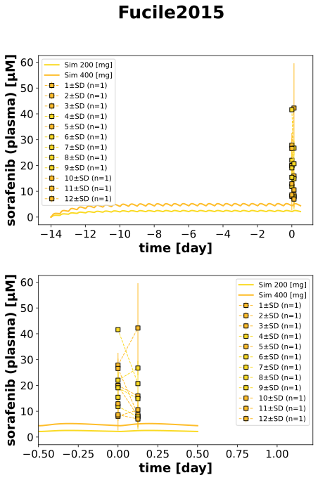

Fucile2015
Models
Datasets
- sor_SOF200_4: Fucile2015_sor_SOF200_4.tsv
- sor_SOF200_6: Fucile2015_sor_SOF200_6.tsv
- sor_SOF200_7: Fucile2015_sor_SOF200_7.tsv
- sor_SOF200_8: Fucile2015_sor_SOF200_8.tsv
- sor_SOF200_9: Fucile2015_sor_SOF200_9.tsv
- sor_SOF400_1: Fucile2015_sor_SOF400_1.tsv
- sor_SOF400_10: Fucile2015_sor_SOF400_10.tsv
- sor_SOF400_11: Fucile2015_sor_SOF400_11.tsv
- sor_SOF400_12: Fucile2015_sor_SOF400_12.tsv
- sor_SOF400_2: Fucile2015_sor_SOF400_2.tsv
- sor_SOF400_3: Fucile2015_sor_SOF400_3.tsv
- sor_SOF400_5: Fucile2015_sor_SOF400_5.tsv
- sor_SOF400_1_1: Fucile2015_sor_SOF400_1_1.tsv
- sor_SOF400_1_10: Fucile2015_sor_SOF400_1_10.tsv
- sor_SOF400_1_11: Fucile2015_sor_SOF400_1_11.tsv
- sor_SOF400_1_12: Fucile2015_sor_SOF400_1_12.tsv
- sor_SOF400_1_13: Fucile2015_sor_SOF400_1_13.tsv
- sor_SOF400_1_14: Fucile2015_sor_SOF400_1_14.tsv
- sor_SOF400_1_2: Fucile2015_sor_SOF400_1_2.tsv
- sor_SOF400_1_3: Fucile2015_sor_SOF400_1_3.tsv
- sor_SOF400_1_4: Fucile2015_sor_SOF400_1_4.tsv
- sor_SOF400_1_5: Fucile2015_sor_SOF400_1_5.tsv
- sor_SOF400_1_6: Fucile2015_sor_SOF400_1_6.tsv
- sor_SOF400_1_7: Fucile2015_sor_SOF400_1_7.tsv
- sor_SOF400_1_8: Fucile2015_sor_SOF400_1_8.tsv
- sor_SOF400_1_9: Fucile2015_sor_SOF400_1_9.tsv
Figures
- Fig1_PO_plasma: Fucile2015_Fig1_PO_plasma.svg
- Tab3_PO_plasma: Fucile2015_Tab3_PO_plasma.svg
{kind=link}
Fig1_PO_plasma

|
Tab3_PO_plasma
|  |
Code
../../../../experiments/studies/fucile2015.py
from copy import deepcopy
from typing import Dict
from sbmlsim.data import DataSet, load_pkdb_dataframe
from sbmlsim.fit import FitMapping, FitData
from pkdb_models.models import sorafenib
from pkdb_models.models.sorafenib.experiments.base_experiment import (
SorafenibSimulationExperiment
)
from sbmlsim.plot import Axis, Figure
from sbmlsim.simulation import Timecourse, TimecourseSim
from pkdb_models.models.sorafenib.helpers import run_experiments
class Fucile2015(SorafenibSimulationExperiment):
"""Simulation experiment of Fucile2015.
14 days of pretreatment, twice daily, either 200 or 400 mg b.i.d
"""
doses = [200, 400] # b.i.d.
#colors = {
#200: "tab:blue",
#400: "tab:orange",
#}
individuals = [
"SOF400_1",
"SOF400_2",
"SOF400_3",
"SOF200_4",
"SOF400_5",
"SOF200_6",
"SOF200_7",
"SOF200_8",
"SOF200_9",
"SOF400_10",
"SOF400_11",
"SOF400_12",
]
def datasets(self) -> Dict[str, DataSet]:
dsets = {}
for fig_id in ["Tab3", "Fig1"]:
df = load_pkdb_dataframe(f"{self.sid}_{fig_id}", data_path=self.data_path)
for label, df_label in df.groupby("label"):
dset = DataSet.from_df(df_label, self.ureg)
if fig_id == "Tab3":
dset.unit_conversion("mean", 1 / self.Mr.sor)
elif fig_id == "Fig1":
dset.unit_conversion("value", 1 / self.Mr.sor)
dsets[f"sor_{label}"] = dset
# print(dsets.keys())
return dsets
def simulations(self) -> Dict[str, TimecourseSim]:
Q_ = self.Q_
tcsims = {}
for dose in self.doses:
tc_first_day = Timecourse(
start=0,
end=12 * 60, # [min]
steps=200,
changes={
**self.default_changes(),
"PODOSE_sor": Q_(dose/2.0, 'mg'),
}
)
tc_dosing = Timecourse(
start=0,
end=12 * 60, # [min]
steps=200,
changes={
"PODOSE_sor": Q_(dose/2.0, 'mg'),
}
)
tcsims[f"sor_po_{dose}_multi"] = TimecourseSim(
[tc_first_day] + [deepcopy(tc_dosing) for _ in range(28)],
time_offset=-14 * 24 * 60
)
return tcsims
def fit_mappings(self) -> Dict[str, FitMapping]:
mappings = {}
for dose in self.doses:
for individual in self.individuals:
mappings[f"fm_sor_po_{individual}"] = FitMapping(
self,
reference=FitData(
self,
dataset=f"sor_{individual}",
xid="time",
yid="mean",
yid_sd="mean_sd",
count="count",
),
observable=FitData(
self, task=f"task_sor_po_{dose}_multi", xid="time", yid=f"[Cve_sor]"
),
)
return mappings
def figures(self) -> Dict[str, Figure]:
return {
**self.figure_fig1(),
**self.figure_tab3(),
}
def figure_fig1(self) -> Dict[str, Figure]:
name = "Fig1"
fig = Figure(
experiment=self,
sid=f"{name}_PO_plasma",
num_rows=2,
num_cols=1,
name=f"{self.__class__.__name__}",
)
plots = fig.create_plots(xaxis=Axis(self.label_time, unit="day"), legend=True)
plots[0].set_yaxis(self.label_sor, unit=self.units["[Cve_sor]"])
plots[1].set_yaxis(self.label_sor, unit=self.units["[Cve_sor]"])
plots[1].xaxis.min = -0.5
# simulation
for dose in self.doses:
if dose == 400:
for k in [0, 1]:
plots[k].add_data(
task=f"task_sor_po_{dose}_multi",
xid="time",
yid="[Cve_sor]",
label=f"Sim {dose} [mg]",
color=self.color_for_dose(dose),
)
# data
for ki in range(1, 15):
for k in [0, 1]:
plots[k].add_data(
dataset=f"sor_SOF400_1_{ki}",
xid="time",
yid="value",
yid_sd=None,
count="count",
label=None,
color=self.color_for_dose(dose),
)
return {
fig.sid: fig,
}
def figure_tab3(self) -> Dict[str, Figure]:
name = "Tab3"
fig = Figure(
experiment=self,
sid=f"{name}_PO_plasma",
num_rows=2,
num_cols=1,
name=f"{self.__class__.__name__}",
)
plots = fig.create_plots(xaxis=Axis(self.label_time, unit="day"), legend=True)
plots[0].set_yaxis(self.label_sor, unit=self.units["[Cve_sor]"])
plots[1].set_yaxis(self.label_sor, unit=self.units["[Cve_sor]"])
plots[1].xaxis.min = -0.5
# simulation
for dose in self.doses:
for k in [0, 1]:
plots[k].add_data(
task=f"task_sor_po_{dose}_multi",
xid="time",
yid="[Cve_sor]",
label=f"Sim {dose} [mg]",
color=self.color_for_dose(dose),
)
# data
for individual in self.individuals:
dose = int(individual[3:6])
for k in [0, 1]:
plots[k].add_data(
dataset=f"sor_{individual}",
xid="time",
yid="mean",
yid_sd="mean_sd",
count="count",
label=individual.split('_')[1],
color=self.color_for_dose(dose),
)
return {
fig.sid: fig,
}
if __name__ == "__main__":
out = sorafenib.RESULTS_PATH_SIMULATION / Fucile2015.__name__
out.mkdir(parents=True, exist_ok=True)
run_experiments(Fucile2015, output_dir="Fucile2015")